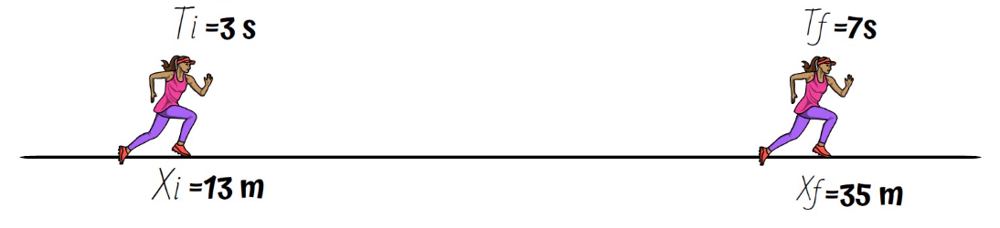
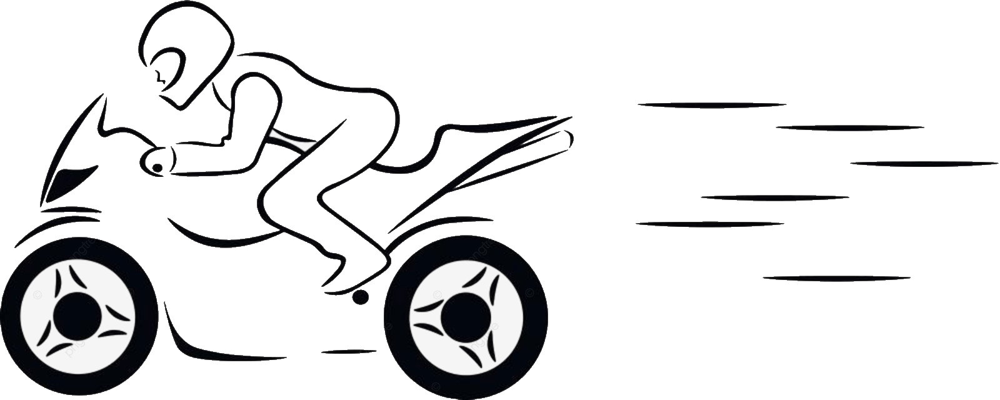
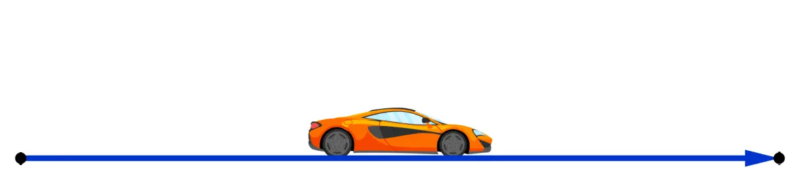
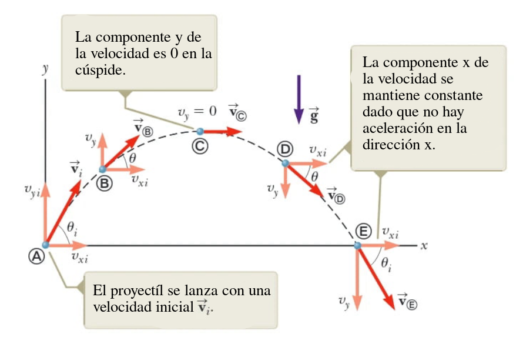
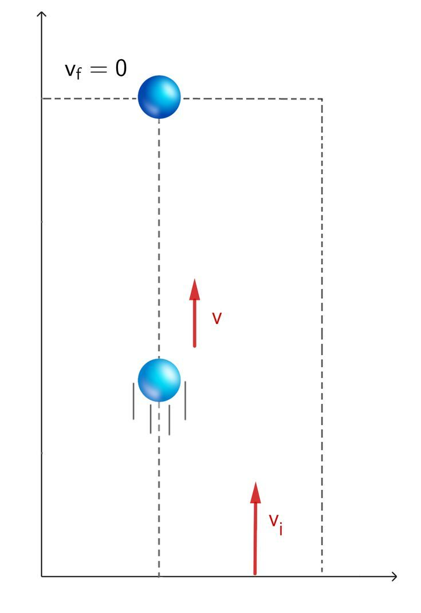
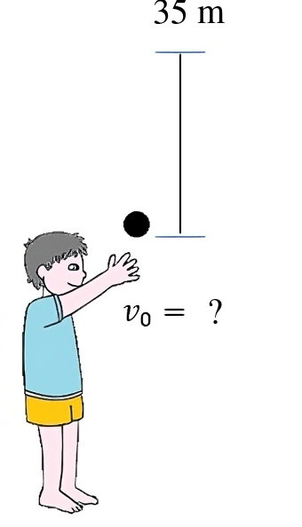
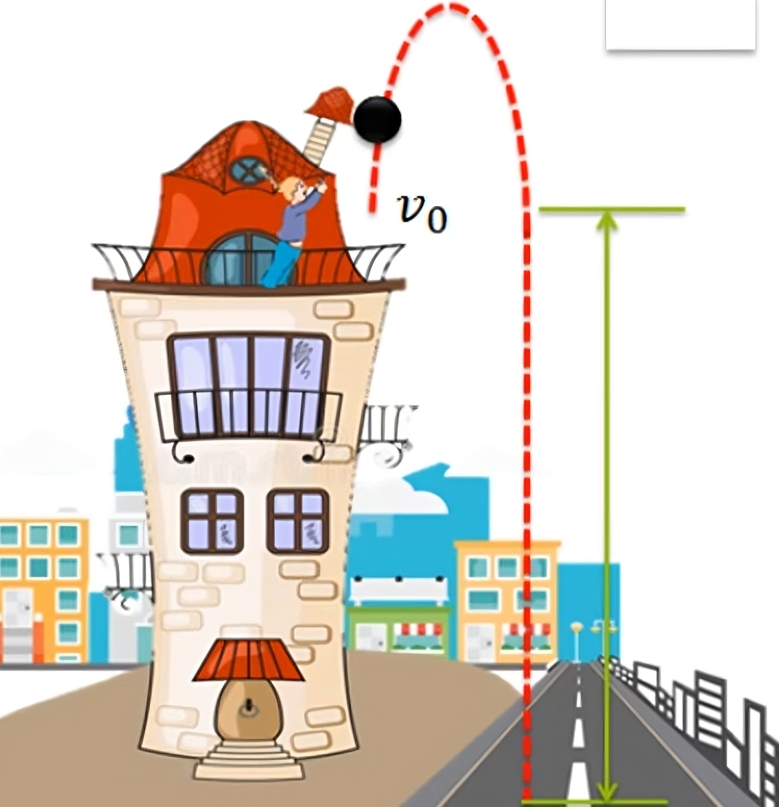

Velocidad Media, Aceleración Media y Lanzamiento de proyectil
Velocidad media y aceleración media
La velocidad media es el promedio de la velocidad a lo largo de un intervalo de distancia y de tiempo. \[ \vec{v}_{\text{media}} = \frac{\Delta \vec{r}}{\Delta t} \] \[ \vec{v}_{\text{media}} = \frac{\vec{r}_f - \vec{r}_0}{t_f - t_0} \]
Aceleración media
Misma definición que la velocidad media, pero con la aceleración. \[ \vec{a}_{\text{media}} = \frac{\Delta \vec{v}}{\Delta t} \] \[ \vec{a}_{\text{media}} = \frac{\vec{v}_f - \vec{v}_0}{t_f - t_0} \]
Ejemplo
Una deportista corre en línea recta. En el instante \(t = 3\) s, su posición es \(13 m\). En el instante final \(t_f = 7\) s, su posición es \(35 m\). Calcular la velocidad media.

Para calcular la velocidad media, se utiliza la fórmula:
\[ \vec{v}_{\text{media}} = \frac{\vec{r}_f - \vec{r}_0}{t_f - t_0} \]
Sustituyendo los valores:
\[ \vec{v}_{\text{media}} = \frac{35 m - 13 m}{7 s - 3 s} \]
\[ \vec{v}_{\text{media}} = \frac{22 m}{4 s} \]
\[ \vec{v}_{\text{media}} = 5.5 m/s \]
Ejercicio 1
Una moto parte desde su reposo y al transcurrir 5 s, adquiere una velocidad de 65 km/h. Calcular la aceleración media en m/s².

Para calcular la aceleración media, se utiliza la fórmula:
\[ \vec{a}_{\text{media}} = \frac{\vec{v}_f - \vec{v}_0}{t_f - t_0} \]
Sustituyendo los valores:
\[ \vec{a}_{\text{media}} = \frac{65 km/h}{5 s} \]
\[ \vec{a}_{\text{media}} = \frac{65 km/h}{5 s} \cdot \frac{1000 m}{1 km} \cdot \frac{1 h}{3600 s} \]
\[ \vec{a}_{\text{media}} = \frac{65 \cdot 1000}{5 \cdot 3600} m/s² \]
\[ \vec{a}_{\text{media}} = 3.61 m/s² \]
Ejercicio 2
Un vehículo se encuentra en el extremo \(B\) de su trayecto recorrido al transcurrir \(30 s\) y en el extremo \(C\), \(45 s\) después, estos fueron contados al momento en que el vehículo comenzó su trayectoria. El tramo de \(B\) a \(C\) es de \(115 m\). Calcular la velocidad media.

Para calcular la velocidad media, se utiliza la fórmula:
\[ \vec{v}_{\text{media}} = \frac{\vec{r}_f - \vec{r}_0}{t_f - t_0} \]
Sustituyendo los valores (el trayecto se nos da, por lo que no es necesario calcular la resta de las posiciones):
\[ \vec{v}_{\text{media}} = \frac{115 m}{45 s - 30 s} \]
\[ \vec{v}_{\text{media}} = \frac{115 m}{15 s} \]
\[ \vec{v}_{\text{media}} = 7.67 m/s \]
Ejercicio 3
- Si tu velocidad media es de 7.5 m/s y corres 100 m, ¿cuánto tiempo tardaste (en segundos)?
- Si sabemos que un auto ha ido a una velocidad media de 80 km/h durante 2 horas, ¿cuántos metros recorrió?
A)
Podemos utilizar la fórmula de la velocidad media para despejar el tiempo:
\[ \vec{v}_{\text{media}} = \frac{\vec{r}_f - \vec{r}_0}{t_f - t_0} \]
Despejando el tiempo:
\[ t_f = \frac{\vec{r}_f - \vec{r}_0}{\vec{v}_{\text{media}}} \]
Sustituyendo los valores:
\[ t_f = \frac{100 m}{7.5 m/s} \]
\[ t_f = 13.33 s \]
B)
Podemos utilizar la fórmula de la velocidad media para despejar la distancia:
\[ \vec{v}_{\text{media}} = \frac{\vec{r}_f - \vec{r}_0}{t_f - t_0} \]
Despejando la distancia:
\[ \vec{r}_f = \vec{v}_{\text{media}} \cdot (t_f - t_0) \]
Sustituyendo los valores:
\[ \vec{r}_f = 80 \left [ \frac{km}{h} \right ] \cdot 2 h \]
\[ \vec{r}_f = 160 km \]
\[ \vec{r}_f = 160 \cdot 1000 m = 160\hspace{1mm}000 m \]
Lanzamiento de proyectiles

Ejemplo
Se lanza hacia arriba un cuerpo con una velocidad inicial de \(5 m/s\). Calcula la altura máxima que alcanza y el tiempo que tarda en llegar a ella.

Necesitamos modelar la ecuación de aceleración, para posteriormente integrarla y obtener la ecuación de la velocidad y la posición.
\[ \vec{a} = -g = -9.8 \hspace{0.5mm} \hat{ȷ} \hspace{3mm} \left [ \frac{m}{s^2} \right ] \]
\[ \vec{v} = \int \vec{a} dt = -9.8t \hspace{0.5mm} \hat{ȷ} + C \hspace{3mm} \left [ \frac{m}{s} \right ] \]
Recordemos que la C es el vector velocidad inicial, por lo que \(C =\vec{v}_0 = 5 \hat{ȷ}\)
\[ \vec{v} = ( -9.8t \hspace{0.5mm} + 5 ) \hspace{0.5mm} \hat{ȷ} \hspace{3mm} \left [ \frac{m}{s} \right ] \]
Integramos nuevamente para obtener la posición:
\[ \vec{r} = \int \vec{v} dt = \int ( -9.8t \hspace{0.5mm} + 5 ) dt \]
\[ \vec{r} = ( -4.9t^2 + 5t )\hspace{1mm}\hat{ȷ}+ C \hspace{3mm} \left [ m \right ] \]
La C es la posición inicial, por lo que \(C = \vec{r}_0 = 0\)
\[ \vec{r} = ( -4.9t^2 + 5t ) \hspace{1mm}\hat{ȷ} \hspace{3mm} \left [ m \right ]\]
Para obtener la altura máxima, primero debemos encontrar el tiempo en que la velocidad es cero, usando la ecuación de la velocidad:
\[ \vec{v} = -9.8t + 5 = 0 \]
\[ 0 = -9.8t + 5 \]
\[ t = \frac{5}{9.8} s \]
\[ t = 0.51 s \]
Ya que tenemos el tiempo, podemos encontrar la altura máxima simplemente sustituyendo el tiempo en la ecuación de la posición:
\[ \vec{r} = -4.9(0.51)^2 + 5(0.51) \hspace{1mm} \hat{ȷ} \hspace{3mm} \left [ m \right ] \]
\[ \vec{r} = -4.9(0.2601) + 2.55 \hspace{1mm} \hat{ȷ} \hspace{3mm} \left [ m \right ] \]
\[ \vec{r} = -1.27449 + 2.55 \hspace{1mm} \hat{ȷ} \hspace{3mm} \left [ m \right ] \]
\[ \vec{r} = 1.275 \hspace{1mm} \hat{ȷ} \hspace{3mm} \left [ m \right ] \]
Ejercicio 4
Se lanza verticalmente hacia arriba una piedra, alcanzando una altura máxima de \(35 m\). Calcular la velocidad inicial con la que fue lanzada y el tiempo que tarda en llegar a la altura máxima.

En primer lugar, modelemos la situación con las ecuaciones de movimiento:
\[ \vec{a} = -g = -9.8 \hspace{0.5mm} \hat{ȷ} \hspace{3mm} \left [ \frac{m}{s^2} \right ] \]
\[ \vec{v} = \int \vec{a} dt = -9.8t \hspace{0.5mm} \hat{ȷ} + \vec{v}_0 \hspace{3mm} \left [ \frac{m}{s} \right ] \]
Sabemos que el ejercicio solo considera el eje y, por lo que la velocidad inicial es un escalar. Integrando la velocidad para obtener la posición:
\[ \vec{r} = \int \vec{v} dt = \int ( -9.8t \hspace{0.5mm} + v_0 ) dt \]
\[ \vec{r} = ( -4.9t^2 + v_0t )\hspace{1mm}\hat{ȷ}+ \vec{r}_0 \hspace{3mm} \left [ m \right ] \]
No hay posición inicial, por lo que \(\vec{r}_0 = 0\)
\[ \vec{r} = ( -4.9t^2 + v_0t ) \hspace{1mm}\hat{ȷ} \hspace{3mm} \left [ m \right ] \]
Para encontrar la velocidad inicial, debemos recordar que la velocidad en la altura máxima es cero, por lo que:
\[ \vec{v} = -9.8t + v_0 = 0 \]
\[ 0 = -9.8t + v_0 \]
\[ v_0 = 9.8t \]
Despejando el tiempo:
\[ t = \frac{v_0}{9.8} \hspace{3mm} \left [ \dfrac{\frac{m}{s}}{\frac{m}{s^2}} \right ] \]
Ahora podemos reemplazar esta expresión en la ecuación de la posición para encontrar la velocidad inicial.
\[ 35 m = -4.9 \left( \frac{v_0}{9.8} \right)^2 + v_0 \left( \frac{v_0}{9.8} \right) \]
\[ 35 m = -4.9 \left( \frac{v_0^2}{9.8^2} \right) + \frac{v_0^2}{9.8} \]
\[ 35 m = -4.9 \left( \frac{v_0^2}{96.04} \right) + \frac{v_0^2}{9.8} \]
\[ 35 m = -0.051 m \cdot v_0^2 + 0.102 m \cdot v_0^2 \]
\[ 35 m = 0.051 m \cdot v_0^2 \]
\[ v_0^2 = \frac{35 m}{0.051 m} \]
\[ v_0 = \sqrt{\frac{35 m}{0.051 m}} \]
\[ v_0 = 26.19 m/s \]
Teniendo la velocidad inicial, podemos encontrar el tiempo que tarda en llegar a la altura máxima reemplazando en la ecuación de la velocidad:
\[ 0 = -9.8t + 26.19 \]
\[ 9.8t = 26.19 \]
\[ t = \frac{26.19}{9.8} s \]
\[ t = 2.67 s \]
Ejercicio 5
Desde el balcón de un edificio a \(14.1 m\) de altura, se lanza una pelota hacia arriba con una velocidad de \(10 m/s\). Calcular el tiempo que tarda en llegar al suelo y la altura máxima que alcanza.

Modelemos:
\[ \vec{a} = -g = -9.8 \hspace{0.5mm} \hat{ȷ} \hspace{3mm} \left [ \frac{m}{s^2} \right ] \]
\[ \vec{v} = \int \vec{a} dt = -9.8t \hspace{0.5mm} \hat{ȷ} + \vec{v}_0 \hspace{3mm} \left [ \frac{m}{s} \right ] \]
Sabemos que la velocidad inicial son \(10 m/s\) hacia arriba, reemplazando:
\[ \vec{v} = ( -9.8t + 10 )\hspace{1.5mm} \hat{ȷ} \hspace{3mm} \left [ \frac{m}{s} \right ] \]
Integrando para obtener la posición:
\[ \vec{r} = \int \vec{v} dt = \int ( -9.8t \hspace{0.5mm} + 10 ) dt \]
\[ \vec{r} = ( -4.9t^2 + 10t )\hspace{1mm}\hat{ȷ}+ \vec{r}_0 \hspace{3mm} \left [ m \right ] \]
La posición inicial es \(14.1 m\), por lo que \(\vec{r}_0 = 14.1 \hspace{1.5mm}\hat{ȷ}\hspace{2mm} \left [ m \right ]\)
\[ \vec{r} = ( -4.9t^2 + 10t + 14.1 ) \hspace{1mm}\hat{ȷ} \hspace{3mm} \left [ m \right ] \]
Para calcular el tiempo que tarda en llegar al suelo, debemos recordar que la posición final es cero, por lo que:
\[ 0 = -4.9t^2 + 10t + 14.1 \]
Resolviendo la ecuación cuadrática:
\[ t = \frac{-10 \pm \sqrt{10^2 - 4(-4.9)(14.1)}}{2(-4.9)} \]
\[ t = \frac{-10 \pm \sqrt{100 + 276.36}}{-9.8} \]
\[ t = \frac{-10 \pm \sqrt{376.36}}{-9.8} \]
\[ t = \frac{-10 \pm 19.4}{-9.8} \]
Esto da dos soluciones, una positiva y otra negativa. La solución negativa no tiene sentido físico, por lo que la solución es:
\[ t = \frac{-10 - 19.4}{-9.8} \]
\[ t = 3 s \]
Finalmente, para encontrar la altura máxima, debemos recordar que la velocidad en la altura máxima es cero, por lo que:
\[ \vec{v} = -9.8t + 10 = 0 \]
\[ 0 = -9.8t + 10 \]
\[ t = \frac{10}{9.8} s \]
\[ t = 1.02 s \]
Evaluando este tiempo en la ecuación de la posición:
\[ \vec{r} = -4.9(1.02)^2 + 10(1.02) + 14.1 \hspace{1mm} \hat{ȷ} \hspace{3mm} \left [ m \right ] \]
\[ \vec{r} = -4.9(1.0404) + 10.2 + 14.1 \hspace{1mm} \hat{ȷ} \hspace{3mm} \left [ m \right ] \]
\[ \vec{r} = 19.2\hspace{1mm} \hat{ȷ} \hspace{3mm} \left [ m \right ] \]